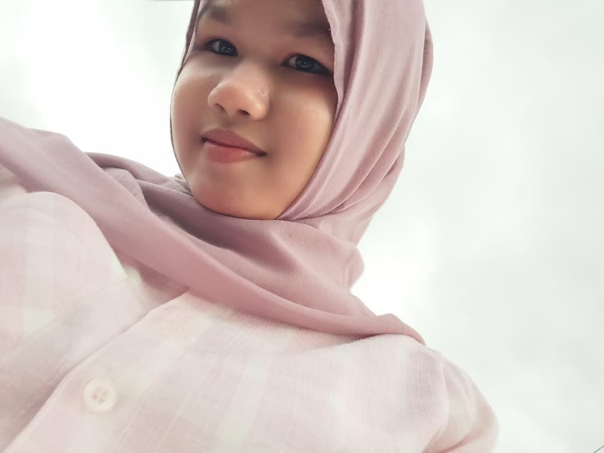

Personal Portfolio | Teknik Komputer dan Jaringan

Calon Tenaga Kerja | Jurusan TKJ
Riau, Indonesia
Saya adalah seorang pelajar jurusan Teknik Komputer dan Jaringan (TKJ) yang memiliki minat dalam bidang teknologi informasi, komputer, dan jaringan. Saya memiliki semangat belajar yang tinggi, bertanggung jawab, disiplin, dan mampu bekerja sama dalam tim.
Nama: Nanda Ramadani
Tempat Tinggal: Riau
Tanggal Lahir: 18 Agustus 2010
Jurusan: Teknik Komputer dan Jaringan
Email: emailnanda@gmail.com
Telepon: 08xxxxxxxxxx
Alamat: Riau, Indonesia